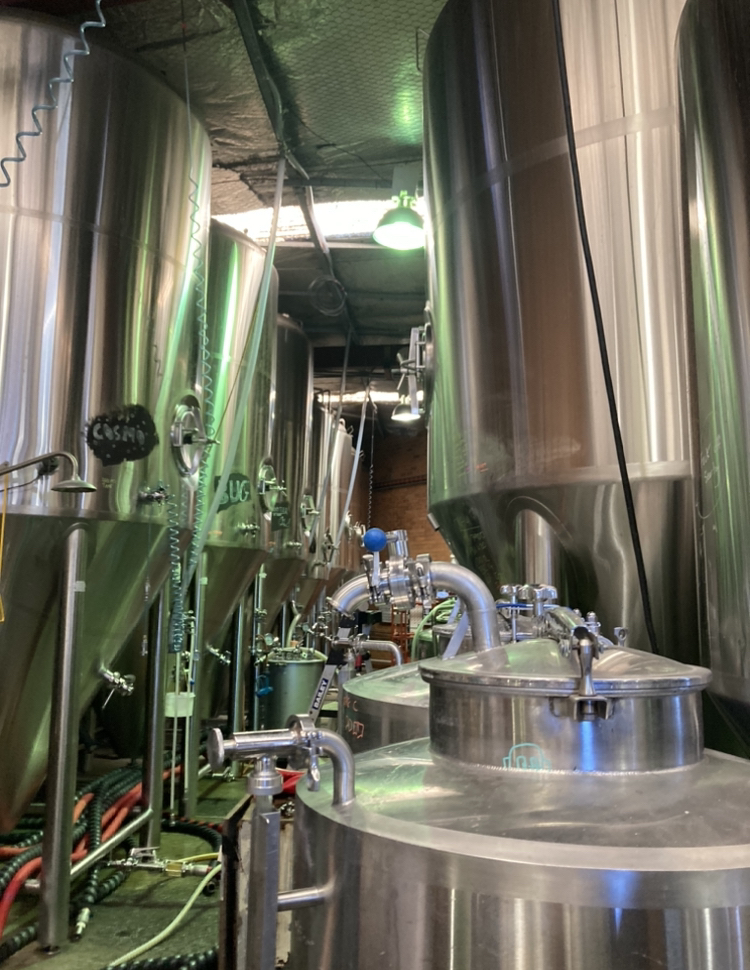
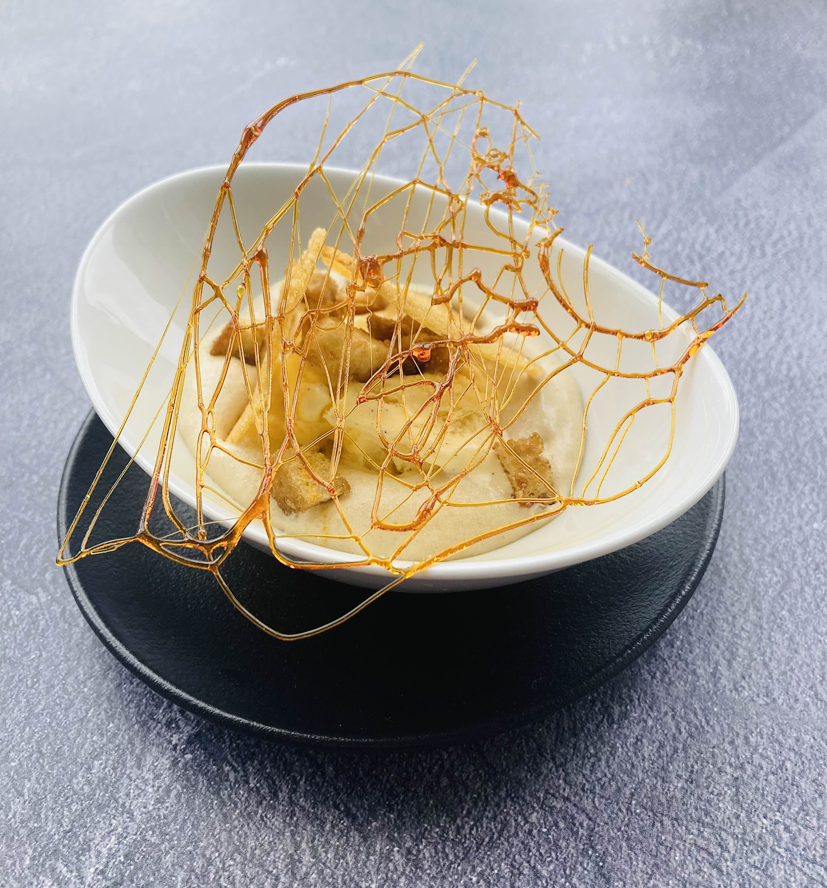
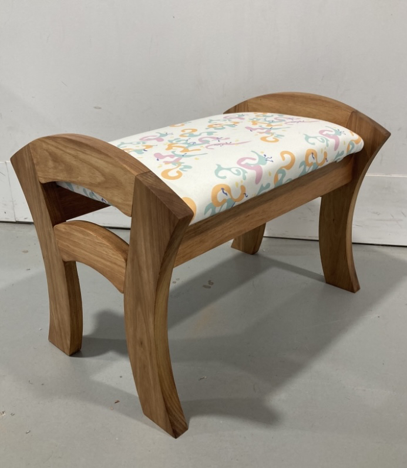
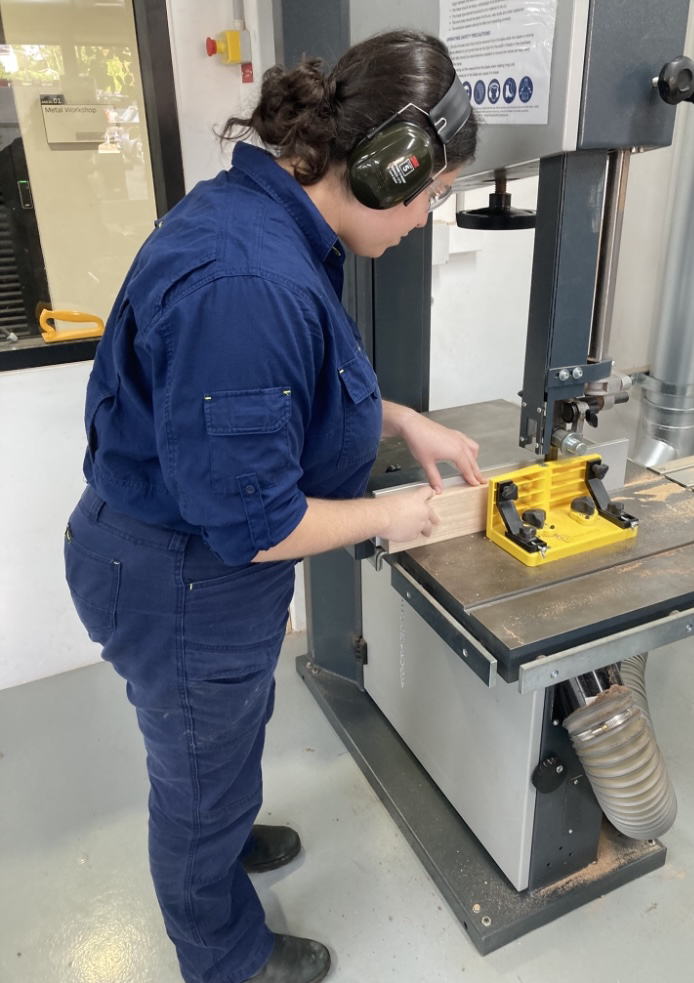

Australian Catholic University
This passion led me to pursue higher education at Australian Catholic University (ACU), where I completed my degree Bachelor of Education (Secondary)/Bachelor of Arts (Design Innovation and Technologies).
During my time at ACU, I have completed many classes to enhance my teaching skills, such as classes on lesson planning, behaviour management, teaching philosophy and teaching strategies. Additionally, I have completed various classes in relation to my teaching specialisation (TAS) including Timber and Metal, Food Technology, Textiles and Computing. These experiences helped shape my understanding of effective teaching and deepened my commitment to creating inclusive and developing a deeper understanding of TAS.



